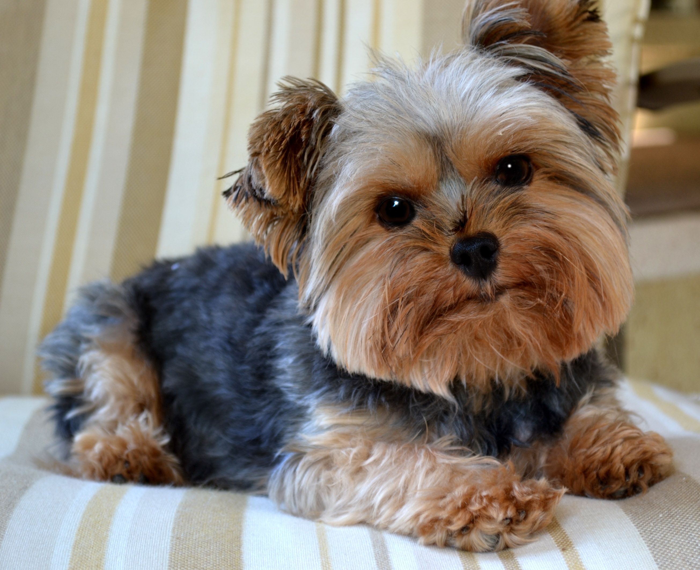
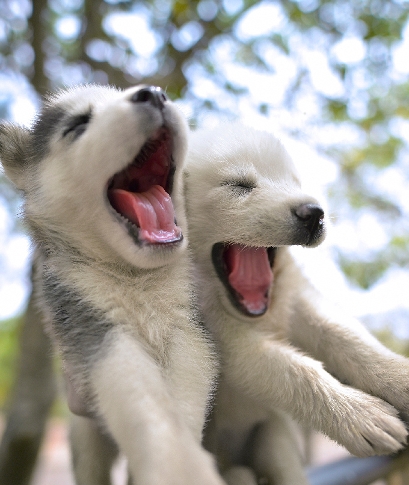
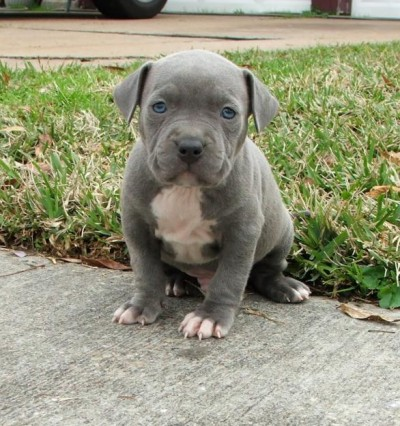
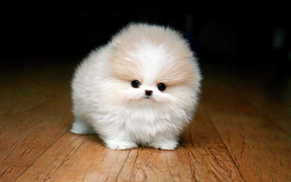

Pembroke Welsh Corgi

The Pembroke Welsh Corgi is a strong, athletic, and lively little herder who is affectionate and companionable without being needy. HERE!
Yorkshire Terrier
Small in size but big in personality, the Yorkshire Terrier makes a feisty but loving companion. HERE!
Siberian Husky
The Siberian Husky has a thick coat that comes in a multitude of colors and markings. HERE!
American Pit Bull Terrier
The American Pit Bull Terrier is a companion and family dog breed. HERE!
Pomeranian
Pomeranian's are descended from large sled dog breeds, it has a long and interesting history. HERE!